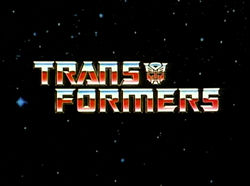

O começo da linha
O nome dado g1 é porque foi a primeira leva de brinquedos que foi a 1984 a 1993, os transfomers começaram nos anos 1980 em uma linha de brinquedos chamada diaclone e micro changer como robôs que se transformavam em objetos do dia dia como relógio, armas , carros,vídeo k7 etc. sendo feita pela empresa chamada takara tomy .
brinquedo dos transfomers
Com uma parceria da takara e hasbro , a hasbro levaria os brinquedos para o ocidente, então a hasbro pediu para Marvel Comics de criar uma backstory para os brinquedos então jim shooter criou a historia e mandou para Dennis O'Neil para escrever os nomes dos personagens mas o jim não gostou dos nomes então levou para um novato chamado Bob Budiansky que criou todos os personagens da serie.
- transfomers g1
- Transfomers animação anos 80
- Backstory da serie
- temporada 1 temporada 2
- filme
- temporada 3
- temporada 4
- referencias
indice
Transfomers animação anos 80
como hasbro queria fazer dinheiro então fizeram uma serie chamada transfomers. animada pela toei, Dai Won Animation Co., Sam Young Studio, Ashi Productions, Trans Arts Co., Anime R, Nakamura Production, and Studio Looke e com ajuda da marvel comics a serie foi lançada de 1984 e terminou 1987

Backstory da serie
Existem duas facções os autobots os construtores eo decepticon que são os militares, os decpticons decidem fazer uma guerra contra os autobots que demorou milhares de anos ate que cybertron ficou sem recurso para continuar a guerra então os autobots fogem de cybertron usando a ark e ir a terra pré-historica então os depticons Perseguem os autobots com a nave chamada nemesis fazendo uma batalha que os duas facções precisem fazer um pouso forçado. Então os autobotss e decpticons entram em uma hibernação ate o ano 1984 fazendo a guerra continuar nos tempos modernos da humanidade
aonde a ark esta na serie
aonde a nemesis esta na serie
Os epísodeos
Os episódios estão na ordem de lançamento porque a maioria dos eps não tem uma history-line e alguns foram achados por dvd como as propagandas anti-drogas e algumas dublagens que haviam desaparecido pelo tempo
1 Temporada
as serie teria três como um teste de popularidade com o sucesso desse 3 episódios fizeram mais 13 episodeos e nesses 13 eps a serie fez varias aventuras na terra e cybertron e colocando novos personagem como os grimlock,slag,swoop,jetfire/skyfire.
Recepção
A serie teve uma ótima recepção criando novos fans para franquia e tendo um estouro nas venda sendo na época linha de brinquedos mais vendida do mundo na epoca
lista de eps
- 1. "More than Meets the Eye, Part 1"
- 2. "More than Meets the Eye, Part 2"
- 3. "More than Meets the Eye, Part 3"
- 4. "Transport to Oblivion"
- 5. "Roll for It"
- 6. "Divide and Conquer"
- 7. "Fire in the Sky"
- 8. "S.O.S. Dinobots"
- 9. "Fire on the Mountain"
- 10. "War of the Dinobots"
- 11. "The Ultimate Doom, Part 1"
- 12. "The Ultimate Doom, Part 2"
- 13. "The Ultimate Doom, Part 3"
- 14. "Countdown to Extinction"
- 15. "A Plague of Insecticons"
- 16. "Heavy Metal War"
2 Temporada
total essa temporada teve 49 episódios. Essa temporada ainda é episódica mas com a nova linha de 1985 eles aumentam o numero de personagens e com isso fazendo aventuras com os personagens secundários e tendo um episodeo especial com um crossover com G.I. Joe e trazendo aventuras fora terra e dentro como indo para planetas novos e com essa novidade a historia de transfomers aumentou como o alpha trion que era o lider antes do Optimus,o objeto antigo chamado vector sigma e trazendo novas ideias como os combiners que são grupos de transfomers que sé juntam em um robô gigantesco,único da serie que tem esse poder é o devastator.Os transfomers que são desse grupo são Scrapper, Hook ,Bonecrusher ,Long Haul ,Mixmaster ,Scavenger.
recepção
a recepção foi melhor que a temporada passada e fazendo com isso que as vendas dos brinquedos disparem deixando os fans ansiosos para uma 3 temporada
lista de eps
- 1. "Autobot Spike"
- 2. "Changing Gears"
- 3. "City of Steel"
- 4. "Attack of the Autobots"
- 5. "Traitor"
- 6. "The Immobilizer"
- 7. "The Autobot Run"
- 8. "Atlantis, Arise!"
- 9. "Day of the Machines"
- 10. "Enter the Nightbird"
- 11. "A Prime Problem"
- 12. "The Core"
- 13. "The Insecticon Syndrome"
- 14. "Dinobot Island, Part 1"
- 15. "Dinobot Island, Part 2"
- 16. "The Master Builders"
- 17. "Auto Berserk"
- 18. "Microbots"
- 19. "Megatron's Master Plan, Part 1"
- 20. "Megatron's Master Plan, Part 2"
- 21. "Desertion of the Dinobots, Part 1"
- 22. "Desertion of the Dinobots, Part 2"
- 23. "Blaster Blues"
- 24. "A Decepticon Raider in King Arthur's Court"
- 25. "The Golden Lagoon"
- 26. "The God Gambit"
- 27. "Make Tracks"
- 28. "Child's Play"
- 29. "Quest for Survival"
- 30. "The Secret of Omega Supreme"
- 31. "The Gambler"
- 32. "Kremzeek!"
- 33. "Sea Change"
- 34. "Triple Takeover"
- 35. "Prime Target"
- 36. "Auto-Bop"
- 37. "The Search for Alpha Trion"
- 38. "The Girl Who Loved Powerglide"
- 39. "Hoist Goes Hollywood"
- 40. "The Key to Vector Sigma, Part 1"
- 41. "The Key to Vector Sigma, Part 2"
- 42. "Aerial Assault"
- 43. "War Dawn"
- 44. "Trans-Europe Express"
- 47. "The Revenge of Bruticus"
- 48. "Masquerade"
- 49. "B.O.T."
Transfomers o filme
O filme Foi lançado na América do Norte em 8 de agosto de 1986 e no Reino Unido em 12 de dezembro de 1986. O filme foi co-produzido e dirigido por Nelson Shin, que também produziu a série televisiva original Transformers. O roteiro foi escrito por Ron Friedman. O elenco do filme tinha vozes famosas como Eric Idle, Judd Nelson, Leonard Nimoy, Casey Kasem, Robert Stack, Lionel Stander, John Moschitta Jr e Orson Welles.
recepção
A recepção do filme foi mista pelos fans porque algumas pessoas ficaram com raiva da ideia de matar quase todos os personagens E adicionar novos nesse filme so para ganhar dinheiro com os brinquedos
sinopse
Em pleno ano 2005, os Autobots e os Decepticons ainda estão em guerra, mas uma mortífera nova força está prestes a ameaçá-los. O gigantesco planeta assassino Unicron se aproxima cada vez mais da Terra e pretende destruí-la. Com isso, os heróicos Autobots resolvem lutar por sua própria sobrevivência e enfrentar a mais nova ameaça ao planeta
3 temporada
Nessa temporada animação teve um corte de orçamento e maioria dos episódios teve que ser animado pela AKOM tendo uma animação pior e os piores episódios da serie mas tentou inovar na historia e tendo mais episódios contínuos e com isso colocaram novos vilões que são os Quintessons eo os decepticons ficaram em segundo plano e so aparecem em alguns fillers,com isso introduziram novos personagens como terrorcons,technobots,throttlebots e tendo novas cassetes para o soundwave que são slugfest e overkill e serie ressuscita o Optimus no final na serie
recepção
A recepção foram mistas com os fans acharam que serie estava ficando chata porque mataram todos os personagens que faziam a serie boa e tentando ressuscitar o Optimus tirando todo o significado da morte dele.
lista de eps
- 1. "Five Faces of Darkness, Part 1"
- 2. "Five Faces of Darkness, Part 2"
- 3. "Five Faces of Darkness, Part 3"
- 4. "Five Faces of Darkness, Part 4"
- 5. "Five Faces of Darkness, Part 5"
- 6. "The Killing Jar"
- 7. "Chaos"7
- 8. "Dark Awakening"
- 9. "Forever Is a Long Time Coming"
- 10. "Starscream's Ghost"
- 11. "Thief in the Night"
- 12. "Surprise Party"
- 13. "Madman's Paradise"
- 14. "Nightmare Planet"
- 15. "Ghost in the Machine"
- 16. "Webworld"
- 17. "Carnage in C-Minor"
- 18. "The Quintesson Journal"
- 19. "The Ultimate Weapon"
- 20. "The Big Broadcast of 2006"
- 21. "Fight or Flee"
- 22. "The Dweller in the Depths"
- 23. "Only Human"
- 24. "Grimlock's New Brain"
- 25. "Money Is Everything"
- 26. "Call of the Primitives"
- 27. "The Face of the Nijika"
- 28. "The Burden Hardest to Bear"
- 29. "The Return of Optimus Prime, Part 1"
- 30. "The Return of Optimus Prime, Part 2"
4 temporada
Nessa temporada so teve 3 episódios os escritores disseram que so tinha dinheiro para cinco episódios mas hasbro pediu 3 eps porque a hasbro achava que as vendas dos brinquedos estavam despencando a cada ano então decidiram terminar com a serie. E com isso os escritores tiverem que colocar 46 personagens novos para vender os novos brinquedos e com um orçamento menor ainda tendo a pior animação e backgrounds da serie inteira
recepção
Os fans odiaram porque achavam que hasbro so estava pelo dinheiro e fazendo uma animação barata so para pegar o dinheiro das crianças.
lista de eps
- 1. "The Rebirth, Part 1"
- 2. "The Rebirth, Part 2"
- 3. "The Rebirth, Part 3"